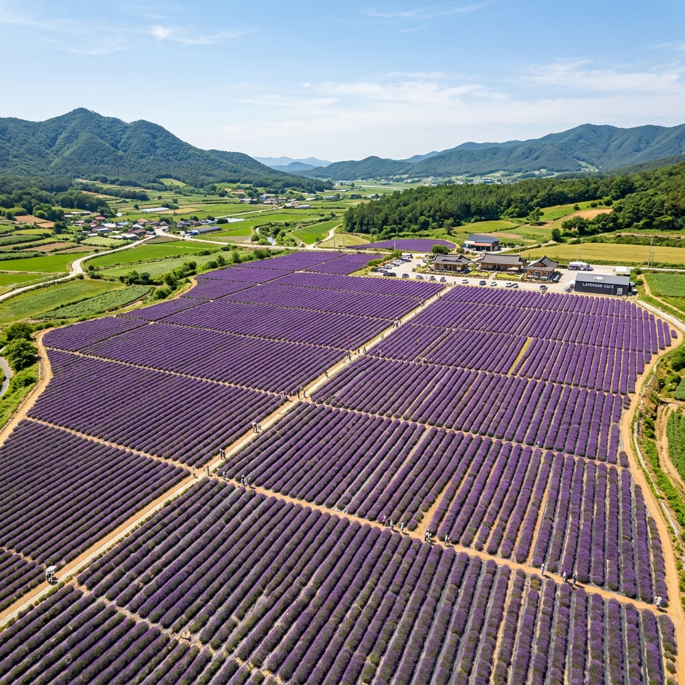
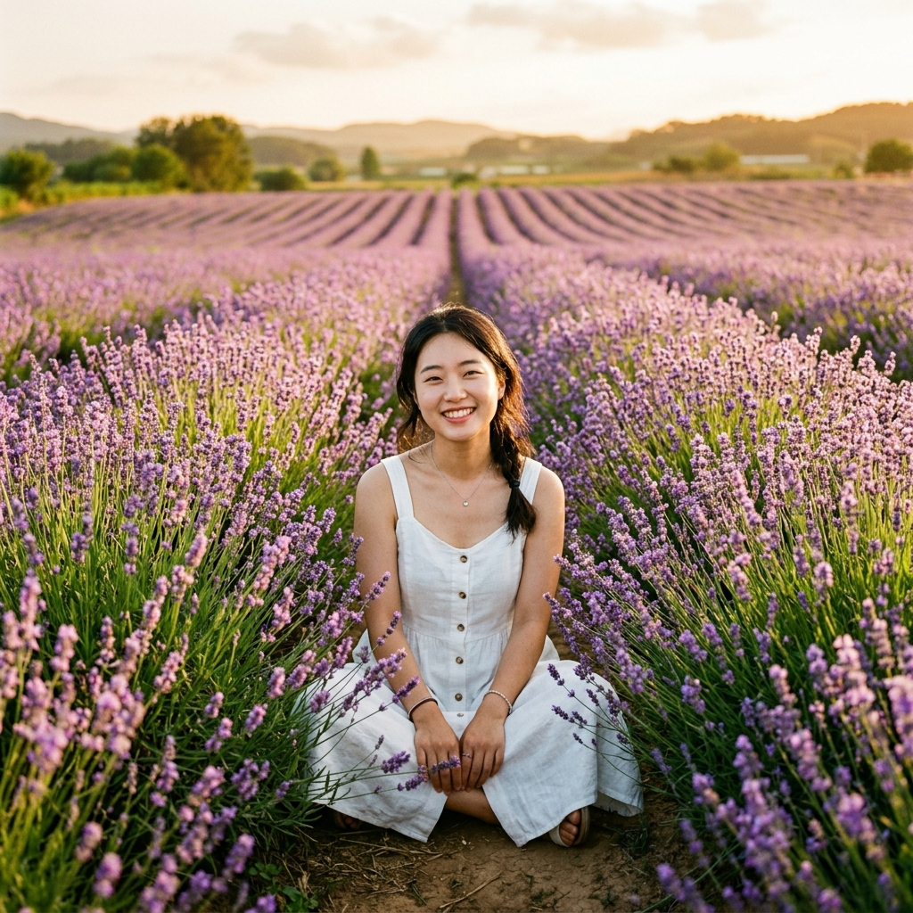
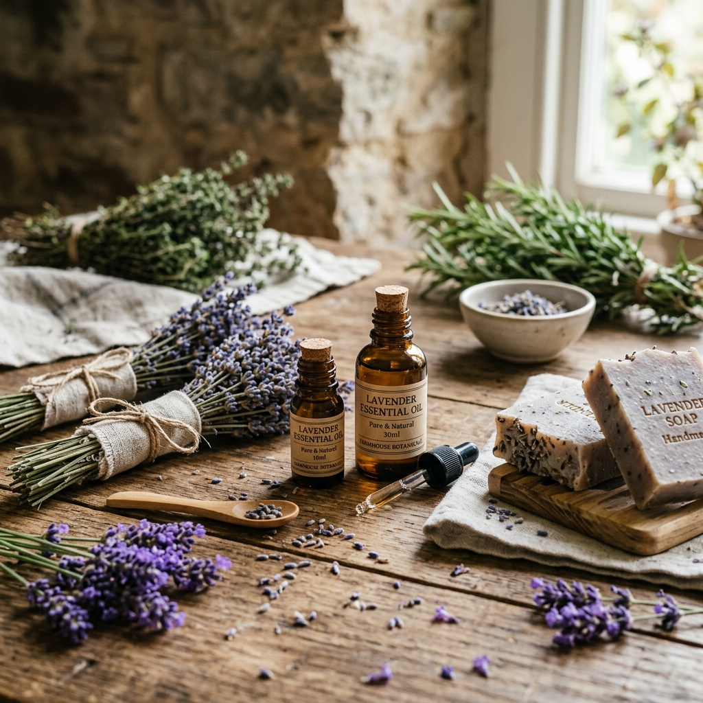

고창 청농원 라벤더 축제 2026: 6,000평 보랏빛 필드 개화시기 & 농장 카페 투어 완벽 가이드
전라북도 고창군에 숨겨진 비밀 하나 — 6월이면 약 6,000평의 들판이 보랏빛으로 물드는 청농원(靑農苑)이 있다. 유럽 프로방스 어딘가를 연상시키는 이 광경이 전라도 고창의 평야 한복판에서 펼쳐진다는 사실이 믿기지 않을 정도다. 청농원 라벤더 축제는 매년 5월 말~6월 중순 약 3~4주간 진행되며, 축제 기간에는 성인 5,000원의 소액 입장료만 내면 라벤더 체험·허브 판매·농장 카페를 모두 즐길 수 있다. 고창 청보리밭 이후 전북 대표 계절 꽃 명소로 자리잡은 청농원의 모든 것을 이 글에 담았다.
🌿 청농원이란? — 고창 평야에서 피어난 6,000평 라벤더 왕국
청농원(gobluefarm.com)은 전라북도 고창군에 위치한 개인 운영 허브 농장이다. '청(靑)' 자가 이름에 들어간 것처럼 파란 하늘 아래 청정 환경에서 허브를 재배하는 것이 농장의 철학이다. 2010년대 중반부터 라벤더를 주력 작물로 키우기 시작해, 현재는 프렌치 라벤더, 타임, 민트, 세이지 등 다양한 허브가 함께 재배되고 있다.
농장 총면적은 약 6,000평(약 20,000㎡)으로, 전체가 라벤더는 아니지만 라벤더 구역만으로도 방문객이 압도되기 충분한 규모다. 고창군의 높은 일조량과 배수 잘 되는 토양이 라벤더 생육에 천혜의 환경을 제공한다.
농장에는 라벤더 제품 직접 판매관이 운영되어 에센셜 오일, 포푸리, 드라이 라벤더 다발, 라벤더 비누 등을 시중보다 저렴하게 구매할 수 있다. 직접 재배한 라벤더로 만든 제품이라 원산지와 품질에 대한 신뢰도가 높다.

고창 청농원 라벤더 전경 / AI 제작 이미지
📅 2026년 청농원 라벤더 축제 핵심 정보
| 항목 |
내용 |
| 축제 기간 |
2026년 5월 말~6월 중순 (연도별 개화 상황에 따라 변동) |
| 입장료 |
성인 5,000원 / 14세 미만 무료 (축제 기간 한정 유료) |
| 축제 외 기간 |
무료 입장 (단, 개화 상태 미보장) |
| 운영 시간 |
09:00~18:00 (시즌 및 날씨에 따라 변동) |
| 위치 |
전라북도 고창군 (정확한 주소는 공식 홈페이지 gobluefarm.com 확인) |
| 주차 |
농장 내 전용 주차장 (무료) |
| 문의 |
고창 청농원 공식 SNS 및 홈페이지 gobluefarm.com |
💜 2026년 개화 전망: 올해는 전국적으로 봄 기온이 높아 개화 시기가 1~2주 앞당겨지는 경향이 있다. 청농원 라벤더는 5월 마지막 주 또는 6월 첫째 주부터 절정에 이를 것으로 예상된다. 출발 1주일 전 청농원 공식 인스타그램에서 실시간 개화 현황 사진을 반드시 확인하자.
🌸 라벤더 절정 포착 전략 — 언제 가야 6,000평 전체가 보라색이 되나
청농원 라벤더의 개화 프로세스를 이해하면 방문 타이밍을 정밀하게 조율할 수 있다.
단계 1 — 꽃대 올라오기 (개화 전, D-10~D-7)
라벤더 꽃대가 줄기 위로 올라오기 시작하는 단계다. 아직 보라색 꽃이 피기 전이라 연두빛 꽃대만 보인다. 이 시기에 방문하면 아쉬움이 크다.
단계 2 — 초개화 (D-5~D-3)
꽃대 아래쪽부터 보라색 소화(小花)가 피기 시작한다. 전체 라벤더의 30~50%가 개화한 상태로, 보라색 물결이 얕게 깔리기 시작한다. 향기가 강해지는 시점이다.
단계 3 — 절정 만개 (D-0~D+7)
전체 꽃대에 소화가 가득 핀 상태. 보라색과 회청색이 섞인 풍부한 색감, 향기가 가장 강렬하다. 사진이 가장 예쁘게 나오는 '골든타임' 구간이다.
단계 4 — 개화 후기 (D+8~D+15)
꽃이 점차 색을 잃고 건조해지기 시작한다. 여전히 보랏빛이 유지되지만 생기가 줄어들고 향기도 약해진다. 드라이플라워 수확에 오히려 좋은 시기다.
💡 타이밍 전략: 초개화~절정 사이(D-3~D+5)가 가장 인생샷이 많이 나오는 구간이다. 청농원 인스타그램의 최신 포스팅을 통해 꽃대의 소화 분포 비율을 육안으로 파악한 뒤 방문하면 실패 확률을 크게 줄일 수 있다.
📸 인생샷 명당 & 촬영 구도 가이드 — 6,000평 어디서 찍을까
청농원은 고창 평야 한복판에 위치해 주변에 장애물이 없다. 이 덕분에 하늘을 넓게 담는 와이드 샷이 대단히 효과적이다.
① 라벤더 두둑 사이 통로
두둑과 두둑 사이 좁은 통로에 서서 앞뒤로 뻗은 라벤더 열을 프레임에 담는 '소실점 구도'가 클래식하게 인기있다. 두둑보다 키가 작은 어린이는 라벤더에 완전히 둘러싸인 그림이 나와 귀여운 컷을 건질 수 있다.
② 농장 입구 표지판 앞
청농원 간판 앞에서 라벤더를 배경으로 찍는 인증샷 포토존이다. 방문 인증으로 가장 기본적으로 찍는 구도다.
③ 농장 외곽 언덕부
농장 한쪽 편 약간 높은 지점에서 전체 라벤더 필드를 내려다보는 부감 시점이 가능하다. 스마트폰 기본 광각 렌즈를 활용하면 6,000평이 한 장에 담기는 파노라마 샷을 얻을 수 있다.

청농원 라벤더 두둑 사이 인생샷 포토존 / AI 제작 이미지
☕ 청농원 카페 & 라벤더 제품 — 방문 기념품 완벽 가이드
청농원 방문의 또 다른 재미는 농장 내 카페와 직판장이다.
농장 카페 (계절 운영)
라벤더 시즌에는 간이 카페가 운영되어 라벤더 음료와 스낵을 즐길 수 있다.
- 라벤더 레모네이드: 상큼한 레몬과 라벤더 시럽의 조합. 보라색 색감 덕에 SNS 인증 음료로 인기.
- 라벤더 에이드: 탄산 베이스에 라벤더 향이 더해진 시원한 음료.
- 허브 차 세트: 세이지·민트·라벤더를 블렌딩한 3종 허브 티 세트.
라벤더 직판 제품 리스트
| 제품 |
가격대 |
특징 |
| 드라이 라벤더 다발 |
5,000~15,000원 |
방향제 & 인테리어용, 직접 수확 |
| 라벤더 에센셜 오일 |
15,000~30,000원 |
농장 직접 증류, 불순물 없음 |
| 라벤더 비누 |
4,000~8,000원 |
수제 천연 비누 |
| 라벤더 포푸리 |
6,000~12,000원 |
차량·실내 방향 |
| 허브 모종 (라벤더·민트 등) |
3,000~7,000원 |
직접 재배용 |
🚗 찾아가는 법 — 서울·전주 출발 루트
고창군은 전라북도 서남부에 위치해 있다. 서울에서는 약 3시간, 전주에서는 약 50분 거리다.
자가용
- 서울 출발: 서해안고속도로 → 고창담양고속도로 → 고창 IC 하차 → 청농원 (약 3시간)
- 전주 출발: 고창담양고속도로 → 고창 방향 (약 50분)
- 내비게이션: "고창 청농원" 또는 "고창 gobluefarm" 검색 후 공식 홈페이지의 정확한 주소 활용
대중교통
- 서울 센트럴시티 → 고창 시외버스터미널 (약 3시간)
- 고창터미널에서 청농원까지 택시 약 15~20분
- 시내버스 연계 가능 여부는 고창군 공식 교통 정보에서 확인
⚠️ 주의사항: 청농원은 개인 운영 농장이므로 기상 악화나 농장 사정에 따라 임시 휴장할 수 있다. 출발 전날 반드시 청농원 인스타그램 또는 홈페이지(gobluefarm.com)에서 운영 여부를 확인하자.
🌻 청농원 + 고창 1일 투어 — 알찬 동선 설계
고창은 청농원 외에도 볼거리가 풍부한 고장이다. 라벤더 방문과 묶을 수 있는 고창 명소를 소개한다.
오전 코스
- 고창읍성 (모양성): 조선 시대 읍성으로, 석성 위를 걷는 '답성놀이' 체험이 가능하다. 세계 문화유산 잠정 목록에 오른 고창 고인돌과 함께 역사 여행의 핵심이다.
- 고창 청보리밭 (학원농장): 이미 시즌이 지났지만(4~5월), 인근에 위치해 드라이브 코스로 지나칠 만하다.
점심
고창 한우 특구 내 한우 구이 전문점에서 점심을 먹는 것이 고창 여행의 공식 코스다. 고창한우 홍보관 주변 식당들이 고창 인증 한우를 합리적인 가격에 제공한다.
오후 코스
- 청농원 라벤더 (14:00~16:30): 오후의 사광이 라벤더 필드를 따뜻하게 비추는 황금시간대
- 선운사 (17:00~): 서해 석양이 드는 늦은 오후, 동백나무 숲과 함께 산책
저녁
고창읍내 복분자주(覆盆子酒) 와이너리 방문. 고창은 복분자딸기 산지로도 유명하며, 복분자주 한 병은 고창 여행의 기념품으로 제격이다.

청농원 라벤더 직판 제품들 / AI 제작 이미지
🌾 고창 라벤더 vs 포천 허브아일랜드 — 어디를 선택할까
두 라벤더 명소는 성격이 다르다. 독자의 여행 스타일에 따라 선택하자.
| 기준 |
고창 청농원 |
포천 허브아일랜드 |
| 입장료 |
5,000원 (축제 기간) |
평일 10,000원 / 주말 12,000원 |
| 규모 |
6,000평 (라벤더 중심) |
13만 평 (복합 테마파크) |
| 분위기 |
시골 농장, 자연 그대로 |
상업적, 다양한 시설 |
| 야간 조명 |
없음 |
핑크 라이트 (연중 상설) |
| 접근성 |
서울에서 약 3시간 |
서울에서 약 1시간 |
| 추천 대상 |
진짜 농장 감성 원하는 여행자 |
가족·커플·다양한 체험 원하는 여행자 |
💡 라벤더 향기 오래 즐기는 법 — 방문 후 집에서도 프로방스
청농원 방문 후 라벤더 향기를 집까지 가져가는 방법을 소개한다.
드라이 라벤더 다발 활용법
- 침실 협탁 위에 올려두면 수면 시 향기 흡입 → 수면 유도 효과 (리나로올 성분)
- 행거나 옷장 안에 걸어두면 방충 효과 (라벤더의 천연 방충 성분)
- 욕실 선반에 두면 입욕 시 아로마 효과
에센셜 오일 활용법
- 목 뒤에 1~2방울 직접 도포 (불안·긴장 완화)
- 초음파 가습기에 4~6방울 희석 (실내 아로마 디퓨저 대용)
- 베개에 1방울 떨어뜨리기 (수면 개선)
#고창라벤더
#청농원라벤더축제
#전북라벤더
#라벤더개화시기2026
#고창여행
#라벤더명소
#6월꽃여행
#전라도여행
#농장카페
#라벤더입장료